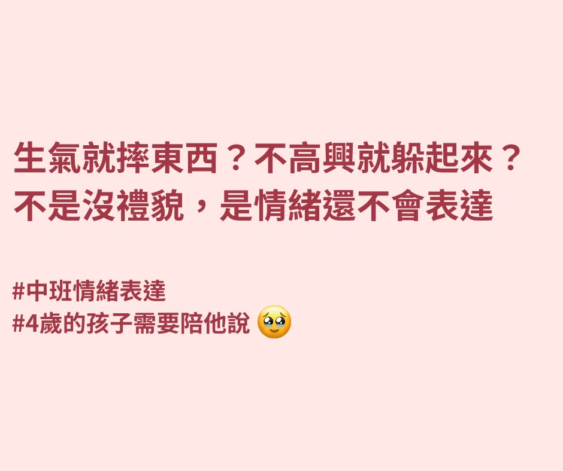

#1
中班情緒痛點・純文字鉤子

投放主：Claire｜雙語媽媽號
📊 成效
| 投放主 | 領課 | CPL | CTR | 領課/活躍天 |
|---|---|---|---|---|
| Claire｜雙語媽媽號 | 137 | $6.86 | 3.77% | 25/26 |
✏️ 標題
- 情緒敏感不是錯，4歲正是教表達的關鍵期
- 你知道嗎？「哭」其實是孩子唯一的語言
- 幼兒園階段不教情緒，小學只會更難帶
- 小事就大哭？其實是還說不出來
📝 文案
主文案
我家哥哥從小就很敏感，一點小事就會大哭。
明明只是玩具被拿走、積木倒了，情緒就崩潰到沒辦法溝通，常常讓我又心疼又無力。
朋友推薦我試試 #JOJO閱讀 的情緒教養課，
🌱 是以繪本故事+互動任務的方式幫孩子認識情緒、說出感受，
我們每天陪他一起聽故事、玩表情卡，慢慢發現她願意開口說「我現在不開心」「我想要一個人安靜一下」…
雖然還是會哭，但他開始會「說出原因」了，
我覺得這就是很大的進步。
#高敏感孩子 #情緒教養 #JOJO閱讀
#孩子哭鬧不是故意的
#媽媽的耐心也需要被看見
文案2
我家哥哥從小就超敏感，別人不小心碰一下、玩具被拿走，她就會大哭。
我有時候也會覺得「你是不是太誇張了？」但後來看了 #HSP 的說法，才知道那是他的大腦對情緒特別敏感。
在別人眼裡是「小題大作」，對他來說是真的「受傷」了。
後來我報名了 #JOJO閱讀 的情緒課，開始練習帶他說：「我不開心，因為你搶了我玩具。」
📚 課程用繪本故事＋情境對話＋表達練習卡片
🎈 慢慢會說出感受，也不再只是哭了
看他學會說「我只是難過，不是生氣」的那一刻，真的好感動。
#高敏感小孩也能穩穩長大
#JOJO情緒課是我們的好幫手
#孩子的情緒需要出口不是壓抑
ℹ️ 純文字痛點，情緒主題領課最高